RSI(2) Wins 72% of Its Trades. More Than Half of What It Earns Is T-Bill Interest.
The most copied mean-reversion rule in retail trading, tested over 40 years. The signal is real. The strategy around it is mostly cash.
Every strategy in this series so far has bought strength. Dual momentum buys whichever asset rose most over the last year. The 10-month moving average buys an index that is above its own average. The Donchian breakout buys a new 20-day high. All three hold for weeks or months, and all three bleed in choppy markets — the Donchian rule spent fourteen consecutive years underwater, almost entirely to chop rather than to any crash.
So this article tests the opposite bet. RSI(2) buys weakness and holds it for days.
I went in expecting a complement: a rule that earns its keep in exactly the conditions that punish trend following. That is not what the data says, and the reason is more interesting than the thesis would have been.
It wins 72.5% of its trades, and annualises 31.2% on the days it is actually invested — nearly three times the index. The signal is real.
It also returns 3.62% a year against 11.12% for doing nothing, and 54% of what it does return is interest on the cash it isn't investing.
New to systematic trading? Terms like CAGR, Sharpe ratio, turnover, drawdown and mean reversion are explained in plain language in the glossary — no prior knowledge assumed. Dotted underlines link straight to the relevant entry.
The rule, exactly as backtested
Larry Connors and Cesar Alvarez published this in Short Term Trading Strategies That Work in 2008. It has been copied into retail trading content ever since, usually without a cost assumption attached.
Every trading day, using closing prices:
- If flat, and the close is above the 200-day simple moving average, and the 2-period RSI closes below 5, buy equities.
- If long, and the close is above the 5-day simple moving average, sell and return to cash.
- Otherwise do nothing.
- Execute at the next day's close.
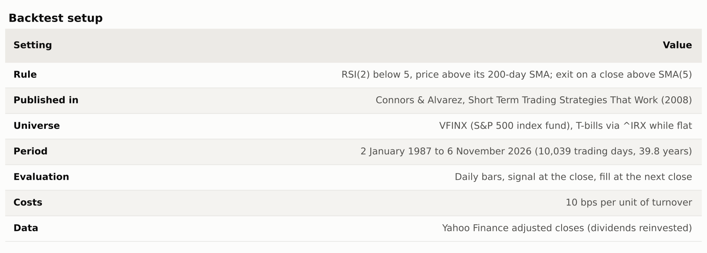
A 2-period RSI is an unusual object. Wilder's smoothing constant at n=2 is one half, so the indicator reacts almost entirely to the last two closes. Dropping below 5 means roughly "the last two days were almost all down" — it is a short-term oversold trigger, not a trend measure. Capital sits in T-bills while flat, which matters more than it sounds like it should.
Results
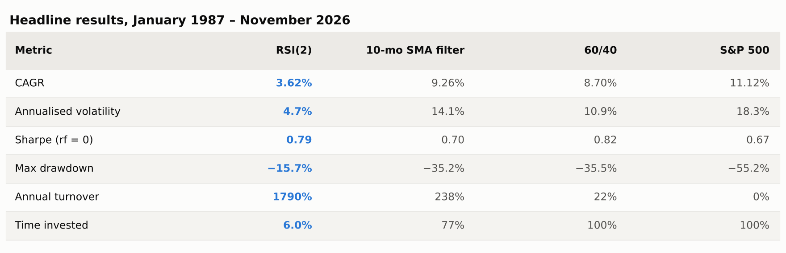
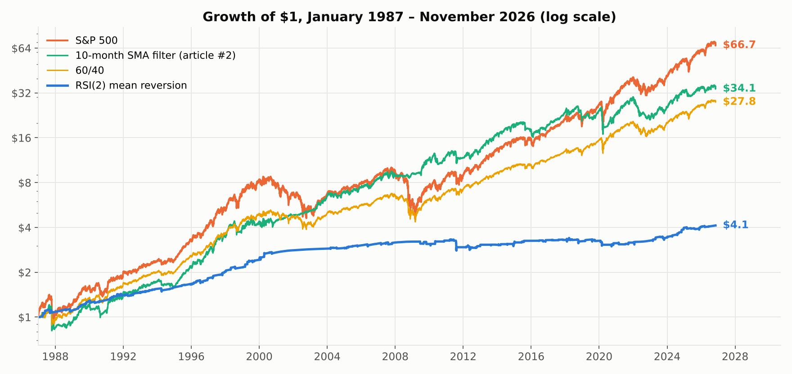
The Sharpe ratio of 0.79 is the best in the series so far, better than the index's 0.67, and the maximum drawdown of −15.7% is less than a third of the index's −55.2%. On the ratios alone this is the best-behaved strategy I have tested.
It also finished with less than a tenth of the money.
Where the return actually comes from
The strategy is invested on 607 of 10,039 trading days — 6.0% of the record. Comparing its CAGR with buy-and-hold is therefore close to meaningless: for 94% of the period the two are not doing the same kind of thing at all.
Split the return into the part earned while invested and the part earned while sitting in T-bills:
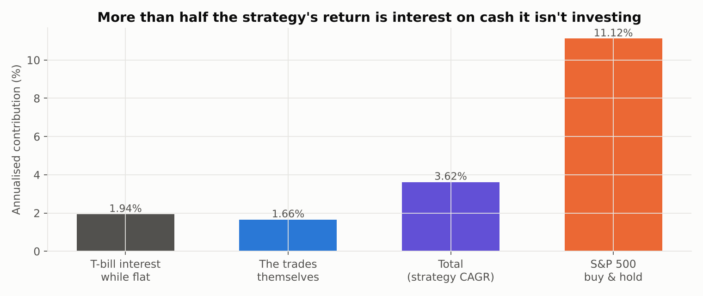
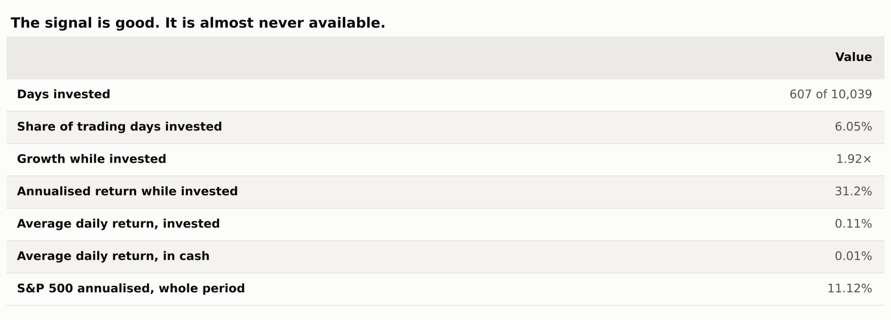
Annualised over the days it holds equities, the strategy returns 31.2%. That is a genuinely strong number and it is not an artifact — it survives costs, and the per-trade statistics agree with it.
But the trades contributed 1.66% a year to the total, and the cash contributed 1.94%. Most of what this strategy earned over forty years, it earned by not trading.
That reframes what the low drawdown means. A maximum drawdown of −15.7% against the index's −55.2% is not evidence of skilful risk management. It is what happens when you are absent.
The signal is good. The trend filter removes the best half of it.
It is worth separating the two components, because the usual explanation for the 200-day filter — that it keeps you out of bad trades — turns out to be wrong.
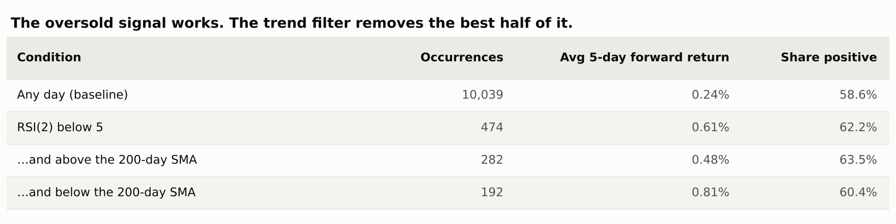
On any given day the S&P returned 0.24% over the following five days, and was higher 58.6% of the time. After RSI(2) closes below 5, the next five days returned 0.61% — more than twice the base rate, across 474 occurrences. Short-term mean reversion in US equities is real and it is not subtle.
Now split those occurrences by the trend filter. Oversold above the 200-day average: 0.48% over the next five days. Oversold below it: 0.81%.
The setups the filter discards are the better ones. Buying a two-day collapse in a market that is already in a downtrend paid almost twice as well as buying one in an uptrend.
The filter still earns its place, but for a different reason than advertised:
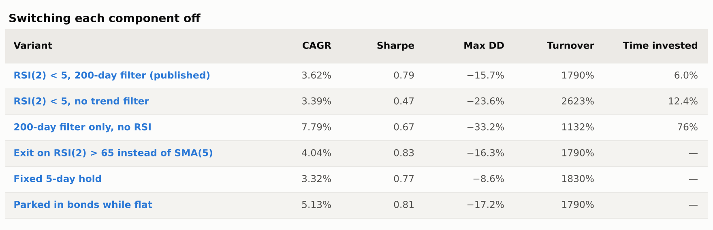
Without the filter, CAGR barely moves but the Sharpe falls from 0.79 to 0.47 and the drawdown deepens from −15.7% to −23.6%. The filter is not selecting better trades. It is declining to catch falling knives during the one or two episodes per decade when the knife keeps falling, and paying for that insurance with the highest-returning setups in the sample.
Note also the fourth row. The 200-day filter on its own, with no RSI at all and no attempt at timing entries, returned 7.79% — more than double the full strategy. Almost everything this rule does to returns, it does by being out of the market.
The cost cliff
At 1790% annual turnover, this strategy is a bet on your cost structure more than on the market.
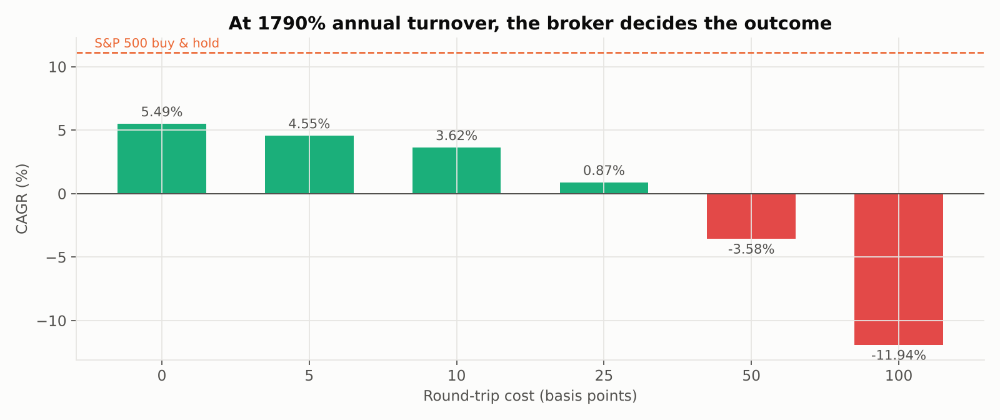
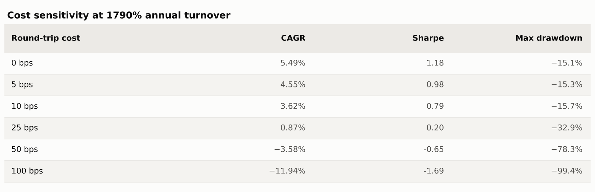
Frictionless it returns 5.49%. At 10 bps, 3.62%. At 25 bps, 0.87%. At 50 bps it is −3.58% — the strategy destroys capital. Nothing about the signal changed; only the bill did.
This is the same finding as the Donchian article, and it is becoming the most reliable result in the series: any rule that trades often is, in practice, a wager that your execution is cheap. Published backtests almost never say so.
A trap in the parameter grid
The grid holds something worth stopping on, because it is a mistake I have seen in published strategy write-ups and nearly made here.
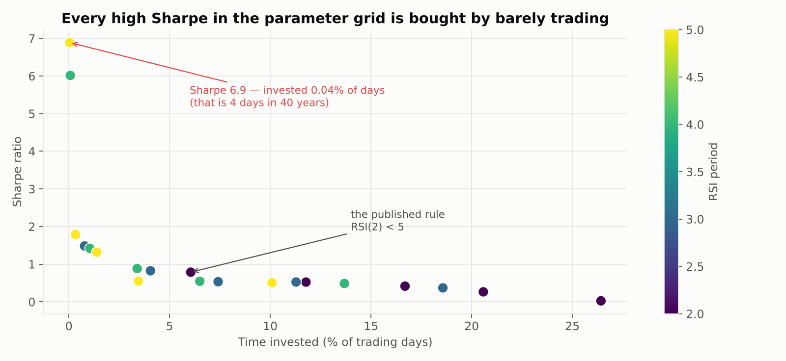
The best Sharpe in the entire grid is 6.9, with a maximum drawdown of 0.59%. It comes from RSI(5) below 5, which triggered on four days in forty years. The second best, 6.0, triggered on seven. These are not strategies; they are rounding errors with a ratio attached.
A Sharpe ratio says nothing about whether the opportunity exists often enough to matter, and optimising for it across a grid will reliably hand you the setting that trades least. The published setting — RSI(2) below 5 — sits in the middle of the cloud at a Sharpe of 0.79 with 6.0% exposure, which is the honest region of the chart.
Any parameter search over a rule like this needs a minimum-exposure or minimum-trade-count floor, or the optimiser will walk straight off the edge.
Before and after the book
This is the third strategy in the series to be tested against its own publication date, and the third to fail.
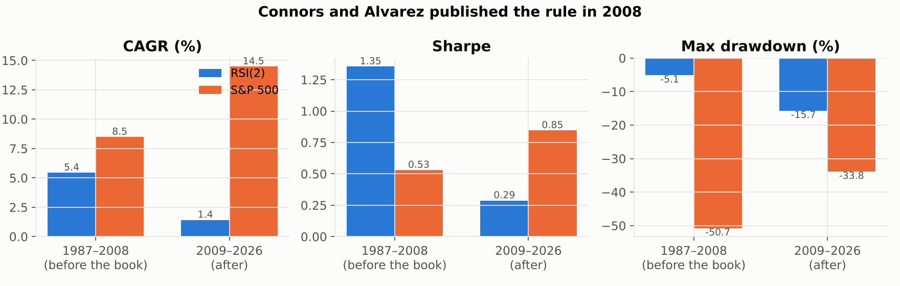
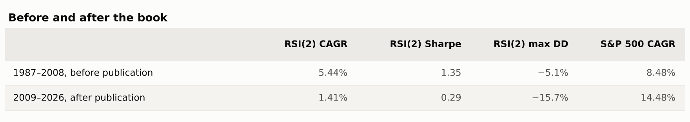
Before 2009: 5.44% a year at a Sharpe of 1.35, with a worst drawdown of −5.1%. That is an outstanding record.
After 2009: 1.41% a year at a Sharpe of 0.29, with a drawdown three times deeper.
The index moved the other way over the same split, from 8.48% to 14.48%. So this is not a story about a harder market. Whatever this rule was capturing, it captured much less of it after it was printed in a bestseller.
I cannot separate publication from the other things that changed in 2009 — decimalisation had already happened, but high-frequency market making scaled up over exactly this window, and short-horizon mean reversion is precisely the inefficiency that activity arbitrages away. Publication and competition are confounded here, and I would not claim otherwise.
The thesis I set out to test, and why it failed
The premise was straightforward: trend following bleeds in chop, mean reversion should feed on it, so the two ought to be complements. The Donchian article left a specific window to test against — January 1999 to May 2013, the fourteen years that rule spent underwater, caused by chop rather than any crash.
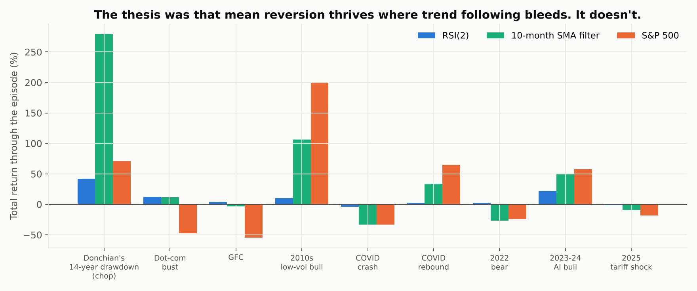
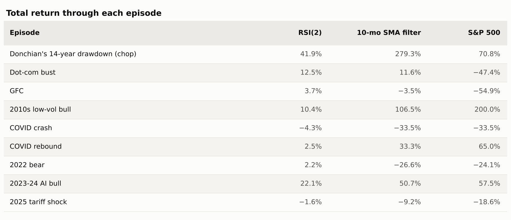
Through that window RSI(2) returned 41.9%. The index returned 70.8% and the monthly SMA filter — a trend system — returned 279.3%. The strategy that was supposed to thrive in chop came last by a wide margin.
What it does do is survive. Through the dot-com bust it returned 12.5% while the index lost −47.4%; through the financial crisis, 3.7% against −54.9%; through the 2022 bear market, 2.2% against −24.1%. Those look like brilliant defensive numbers until you remember the exposure table. It survived those episodes the way a savings account survives them.
The complementarity thesis fails because mean reversion and trend following are not opposites in the way the framing suggests. Both need direction. A trend system needs price to keep going; this rule needs price to snap back. A genuinely rangebound market — the 1999–2013 window — delivers neither reliably, so both rules spend it paying costs for round trips that go nowhere. Chop is not the trend follower's enemy and the mean reverter's friend. It is just hostile.
What I'd take from this
The signal is the most interesting thing here and it is not the strategy. Short-term oversold conditions in US equities really do predict higher forward returns, by a margin that is large and that persisted across 474 occurrences over forty years. 72.5% of trades were winners, over 178 of them, at an average holding period of 3.4 days.
What the strategy does with that signal is where it falls apart. It is right often and paid little for being right — the average winner is 1.37% against an average loser of −1.49%, a payoff ratio below one. It is invested too rarely for the edge to compound into anything. And it trades often enough that execution cost, not the signal, determines the outcome.
If I were trying to use this, I would not trade it as published. I would treat RSI(2) as an overlay on a position I already hold rather than as a standalone system — scaling exposure up on oversold closes rather than moving between equities and cash — which keeps the signal's value without paying to re-enter the market from scratch every few days, and without leaving 94% of the period in T-bills. That is a different article, and the honest thing to say is that I have not tested it yet.
Caveats worth stating plainly
This is a long-only, single-index, fully-invested-or-flat implementation. Connors' own work applies the rule across many stocks and ETFs simultaneously, which changes the exposure arithmetic completely: twenty uncorrelated instruments each invested 6% of the time is a portfolio that is usually holding something. That is the strongest version of the argument against the conclusion here, and this backtest does not address it.
The cash return is real but period-specific. T-bills averaged a little under 3% over this window; a decade of zero rates would remove most of the contribution I just attributed to cash, and the strategy's total return with it.
The 5-day exit is one of several published variants, and the grid shows the result is not fragile to it — exiting on RSI(2) above 65 does slightly better, a fixed 5-day hold slightly worse. Entry at RSI below 10 rather than 5, which is the more commonly quoted version, roughly doubles the exposure and halves the Sharpe.
And as always: this is one market over one history, with instrument choice and start date selected with hindsight.
The code
Same open-source harness as the rest of the series. The engine's daily rebalancing, added for article #3, is what makes a rule that holds for three days testable at all. Each run writes a single JSON file with every metric, which is what these charts and tables were rendered from.
pip install -r requirements.txt
python strategies/rsi2-mean-reversion/run.py
python strategies/rsi2-mean-reversion/make_charts.pyCode: strategy-lab/strategies/rsi2-mean-reversion — this strategy, with every output file committed. Engine: AlgoStrategyLab/strategy-lab — the shared harness, MIT licensed.
Next up: pairs trading — the first strategy in this series that does not need the market to go anywhere at all, and the first where the hard part is deciding what counts as a pair.
References. Connors, L. & Alvarez, C. (2008), Short Term Trading Strategies That Work. Wilder, J. W. (1978), New Concepts in Technical Trading Systems — the original RSI. Faber, M. (2007), "A Quantitative Approach to Tactical Asset Allocation". Antonacci, G. (2014), Dual Momentum Investing. Data: Yahoo Finance adjusted closes, retrieved 9 November 2026.
This is research and education, not investment advice. Backtests benefit from hindsight in instrument choice and start date, and past performance does not predict future results.